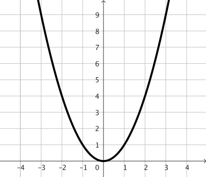
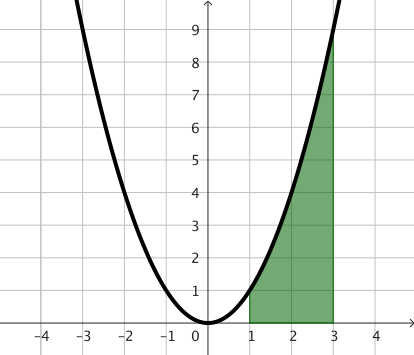
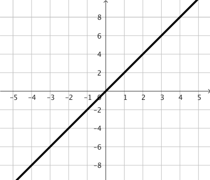
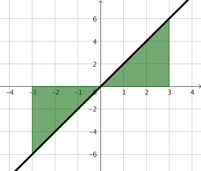
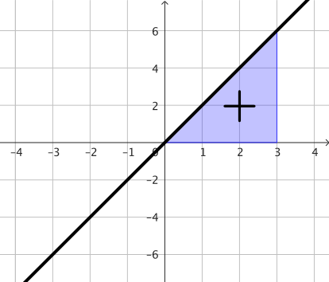
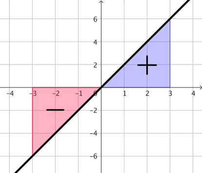
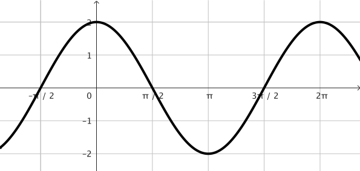
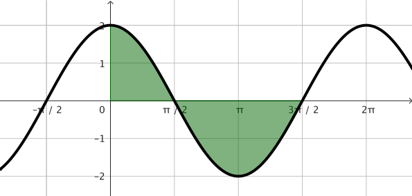
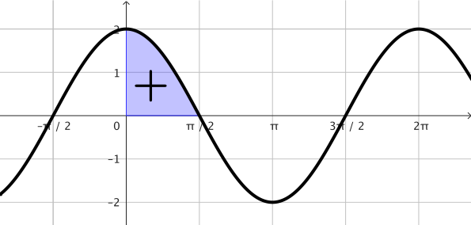
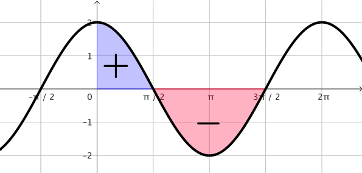

Foundation Mathematics
1017SCG
Week 11
Topics
- Introduction to Integration
- Tables of Integrals
- Definite Integrals (Area Under Curve)
Introduction to Integration
Consider the function:
$\;y= 3x^2-4x+5$
Recall how we computed the derivative
$\ds \frac{dy}{dx}$ $= 6x-4$
Introduction to Integration
$\;y= 3x^2-4x+5$


Question: If we know the derivative
$\ds \frac{dy}{dx}$ $= 6x-4$
is it possible to recover back $y$?
👉 $\;y = 3x^2-4x+C,$ with $C$ a constant.
Introduction to Integration
Thus, if $\,\ds \frac{dy}{dx} = 6x-4,\,$ we have $\,\ds y = 3x^2-4x + C$
$\ds \int$ $ 6x - 4$ $dx$ $ = 3x^2-4x + C$
This process is called:
Anti-differentiation = Integration
Introduction to Integration
A process developed in the late 1700s
Anti-differentiation = Integration

Isaac Newton |
Gottfried Wilhelm Leibniz |
Big question
Can we compute the integral
of any given function $f(x)$?

The answer is "Yes",
as long as the function $f(x)$ is
continuous.
Warning!

Remark about computing anti-derivatives❗️
Although the theory says the integral
$ \ds \int f(x)\, dx = F(x) + C $
exists for $f(x)$ continuous functions,
we cannot always find a formula for $F(x)$

Remark about computing anti-derivatives❗️
Although the theory says the integral
$
\ds \int f(x)\, dx = F(x) + C
$
exists for $f(x)$ continuous functions,
we cannot always find a formula for $F(x)$
Here are some examples:
$\ds\int e^{-x^2}\, dx,\;$ $\ds\int\sin\left(x^2\right)\, dx,\;$ $\ds\int\cos\left(x^2\right)\, dx$
These are known as non-elementary integrals
Good news! Topic the scope of this course. 😃
In this course we consider only basic, elementary functions!
Table of integrals
| $f(x)$ | $\ds \int f(x)\,dx$ |
| $x^n$ | $\dfrac{x^{n+1}}{n+1}+C$ |
| $ax^n$ | $\dfrac{ax^{n+1}}{n+1}+C$ |
| $\sin(x)$ | $-\cos(x)+C$ |
| $\cos(x)$ | $\sin(x)+C$ |
| $e^x$ | $e^x+C$ |
| $\dfrac{1}{x}$ | $\ln |x|+C$ |
Examples: $x^n$
• $\ds \int x^2 \,dx$ $= \dfrac{x^{2+1}}{2+1}+C$ $= \dfrac{x^{3}}{3}+C$
• $\ds \int x^4 \,dx$ $= \dfrac{x^{4+1}}{4+1}+C$ $= \dfrac{x^{5}}{5}+C$
Examples: $a x^n$
• $\ds \int 2x^4 \,dx$ $= \dfrac{2x^{4+1}}{4+1}+C$ $= \dfrac{2x^{5}}{5}+C$
• $\ds \int 6x \,dx$ $= \dfrac{6x^{1+1}}{1+1}+C$ $= \dfrac{6x^{2}}{2}+C$
• $\ds \int 2x^2-4x+5 \,dx$ $= \dfrac{2x^{3}}{3}$ $-\,\dfrac{4x^{2}}{2}$ $+\,5x$ $+\,C$
Examples: $a\sin(x),\,b \cos(x)$
•$\ds \int 2\cos(x) \,dx$ $=2\sin(x)+C$
•$\ds \int 3\sin(x) \,dx$ $=3(-\cos(x))+C$ $=-3\cos(x)+C$
•$\ds \int -7\cos(x) + 3\sin(x) \,dx$ $= -7\sin(x)$ $-3\,\cos(x)+C$
Examples: $ae^x$ and $a/x$
• $\ds \int 2e^x \,dx$ $=2e^x+C$
• $\ds \int \frac{4}{x} \,dx$ $=4\ln|x|+C$
• $\ds \int -7e^x + \frac{3}{x} \,dx$ $= -7e^x$ $+\,3\ln|x|+C$
One more example
$\ds \int x^2 + 2\sin(x)+ 3\cos(x)+ 5e^x +\frac{7}{x} \,dx$
$\ds = \frac{x^3}{3}$ $+\,2(-\cos(x))$ $+\,3\sin(x)$ $+\,5e^x$ $+\,7\ln|x|$ $+\,C$
$\ds = \frac{x^3}{3}$ $-\,2\cos(x)$ $+\,3\sin(x)$ $+\,5e^x$ $+\,7\ln|x|$ $+\,C$
Definite Integrals
Consider the continuous function $f(x)$ on $[a,b]$ and $F(x)$ is function such that $F'(x)=f(x)$ for every $x\in[a,b],$ then
• We call $F(x)$ an anti-derivative.
• This fact is known as The Fundamental Theorem of Calculus.
Definite Integrals: Example 1
$\ds \int_1^3 x^2 \, dx$ $\ds = \left[\dfrac{x^3}{3}+C\right]_1^3$ $\qquad \quad \quad\; F(x) = \dfrac{x^3}{3}+C\;$ 👈
$\qquad \qquad \ds = \underbrace{\left[\dfrac{(3)^3}{3}+C\right]}_{F(3)} - \underbrace{\left[\dfrac{(1)^3}{3}+C\right]}_{F(1)}$
$\qquad \qquad \ds = \dfrac{27}{3}+C $ $ -\, \dfrac{1}{3}-C$
$\qquad \qquad \ds = \dfrac{26}{3}$
Definite Integrals: Example 1
|
$\ds \int_1^3 x^2 \, dx= \dfrac{26}{3}$ |
  $f(x)=x^2$ |
Definite Integrals: Example 2
|
$\ds \int_{-3}^3 2x \, dx $ $=\ds \left[\dfrac{2x^2}{2}+C\right]_{-3}^3$ $\quad =\ds \big[x^2+C\big]_{-3}^3$ $\quad =\ds \left[(3)^2+C\right]-\left[(-3)^2+C\right]$ $\quad =\ds \left[9+C\right]-\left[9+C\right]$ $\quad =\ds 9+C-9-C$ $\quad =\ds 0$ |
    $f(x)=2x$ |
Definite Integrals: Example 3
$\ds \int_{0}^{\frac{3\pi}{2}} 2\cos(x) \, dx $ $=\ds \bigg[2\sin(x)\bigg]_0^{\frac{3\pi}{2}}$ $ =\ds 2\sin\left(\frac{3\pi}{2}\right)-2\sin\left(0\right)$
$\qquad \qquad\qquad=\ds 2(-1)-2(0)$ $ =\ds -2$




Definite Integrals: Example 3
If we want to find the total area bounded by the curve $y=2\cos(x)$ and between $x=0$ and $x=\dfrac{3\pi}{2},$ then we need to compute two integrals:
$\ds \int_{0}^{\frac{\pi}{2}} 2\cos(x) \, dx$ $\ds=2\;\;\;$ and $\;\;\;\; \ds \int_{\frac{\pi}{2}}^{\frac{3\pi}{2}} 2\cos(x) \, dx$ $=-4$
Definite Integrals: Example 3
Therefore, the total area bounded by the curve $y=2\cos(x)$
and between $\,x=0\,$ and $\,x=\dfrac{3\pi}{2}\,$
is:
Total Area = $\ds\left|\int_{0}^{\frac{\pi}{2}} 2\cos(x) \, dx\right|+\left|\int_{\frac{\pi}{2}}^{\frac{3\pi}{2}} 2\cos(x) \, dx\right| $ $=|2|+ |-4|$ $=6$
Final remarks
From Calculus we have
Integration and Differentiation have been key
to the development of modern science and technology.
Final remarks
The invention of Calculus is often attributed to
|
Isaac Newton |
Gottfried Wilhelm Leibniz |
However, this is an oversimplification, as Calculus is the result of a long evolution in which both played a decisive role.
Final remarks
Newton and Leibniz were highly criticised! 🤬
Let $y = x^2.\,$ Using Newton & Leibniz's method to compute the derivative we consider $h$ to be an infinitesimal increment:
$\ds \dfrac{f(x+h)-f(x)}{h} $ $\ds = \dfrac{\left(x^2 + 2xh + h^2\right) -\left(x^2\right)}{h} $ $ \ds = \ds \dfrac{ 2xh + h^2}{h}$
$\ds = \dfrac{ \left(2x + h\right)h}{h}$ $\ds =2x+h .\;$ Therefore $\;\ds \frac{dy}{dx} = 2x$
George Berkeley (1685-1753) argued that it was logically inconsistent to introduce an infinitesimal increment $h$ in order to perform calculations, and then to let $h$ vanish at the end of the process.
Final remarks
Fortunately, the issue was solved a few years later with
the introduction of the formal definition of limit.
Let $y = x^2.\,$ Using limits we have
$\ds \lim_{h\ra 0} $ $ \dfrac{f(x+h)-f(x)}{h}$ $\ds = $ $\ds \lim_{h\ra 0} $ $\ds\dfrac{\left(x^2 + 2xh + h^2\right) -\left(x^2\right)}{h} $
$\qquad \ds = $ $\ds \lim_{h\ra 0} $ $\ds \dfrac{ 2xh + h^2}{h}$ $\ds = $ $\ds \lim_{h\ra 0} $ $\ds \dfrac{ \left(2x + h\right)h}{h}$ $\ds = $ $\ds \lim_{h\ra 0} $ $\ds\left(\right. $ $\ds 2x+h$ $\ds\left.\right) $ $\ds=2x$
Now we can properly say that $\ds\frac{dy}{dx}=2x.$

Final remarks
|
Isaac Newton |
Gottfried Wilhelm Leibniz |
The Calculus, next to the Euclidian geomtery, is the greatest creation in all mathematics.
Moris Kline, 1972.
References
- Boyer, C. B. (1949). The History of the Calculus and its Conceptual Development. Dover Publications, Inc. New York.
- Edwards, C. H. (1979). The Historical Development of the Calculus. New York Springer-Verlag.
- Kline, M. (1972). Mathematical Thought from Ancient to Modern Times. New York. Oxford University Press.
- Whiteside, D. T. (1960). Patterns of mathematical thought in the later seventeenth century. Archive for History of Exact Sciences. 1, 179-388.
Maths might seem like it's about getting the right answers, but really it's about the process of discovering, the process of exploration, the journey towards mathematical truth, and how to regonise when we've found it.
Eugenia Cheng, Is Maths real? (2023)